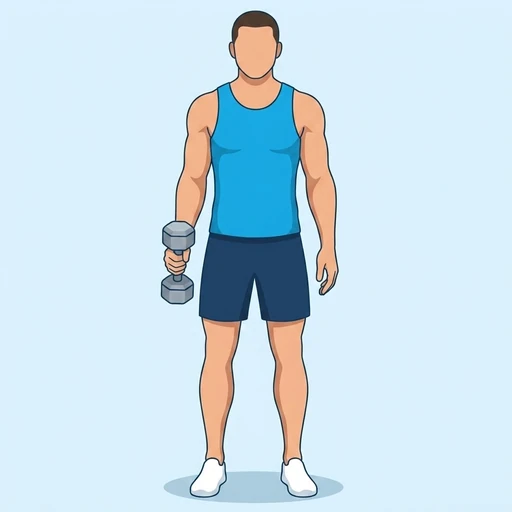
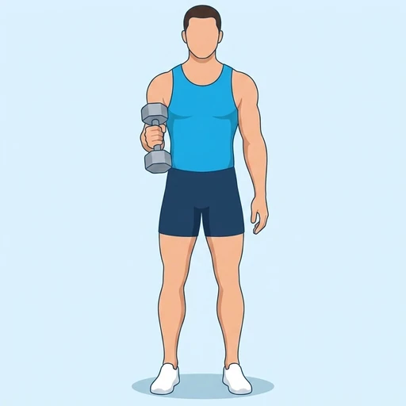
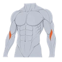
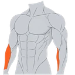

Single-Arm Hammer Curl
A unilateral dumbbell curl with a neutral grip that keeps the working elbow close to the torso while the brachialis and brachioradialis flex the elbow.
Upper arms · Dumbbell · Intermediate


Muscles worked by the Single-Arm Hammer Curl
Primary

Brachialis
BrachioradialisSecondary
Also called: brachialis muscle, lower bicep, brachioradialis muscle, forearm flexor.
Equipment
Also called: db, dumbell, hex dumbbell, rubber dumbbell, hand weight.
How to do the Single-Arm Hammer Curl
- Stand with your feet about hip-width apart and hold one dumbbell at your side with the palm facing inward.
- Brace your trunk and keep the working upper arm beside your ribs as the arm hangs straight.
- Curl the dumbbell toward your shoulder without rotating the palm or swinging the torso.
- Squeeze the elbow flexors at the top, then lower the dumbbell under control until the arm is straight.
- Complete the repetitions on one side, then switch arms and repeat.
Form tips
- Let the weaker arm set the repetitions and weight so both sides receive the same work.
- Keep the wrist neutral and the shoulder quiet; the movement should come from bending the elbow.
- Use a controlled lowering phase instead of dropping the dumbbell from the top.
At a glance
| Body part | Upper arms |
|---|---|
| Category | Strength |
| Force type | Pull |
| Mechanic | Isolation |
| Difficulty | Intermediate |
| Equipment | Dumbbell |
| Goals | Hypertrophy |
| Tags | Knee safe, Shoulder safe, Lower back safe, No axial load |
| MET | 5.0 (metabolic equivalent, for calorie estimates) |
| Unilateral | Yes |
| Bodyweight | No |
| Dataset id | single-arm-hammer-curl |
Single-Arm Hammer Curl in German & Spanish
| German | Einarmiger Hammer-Curl |
|---|---|
| Spanish | Curl martillo unilateral |
Descriptions, instructions and tips ship in all three languages in the JSON.
Related exercises
Exercise data (JSON)
The record below is exactly what exercises.json ships for this exercise — names, descriptions, instructions and tips in English, German and Spanish.
{
"id": "single-arm-hammer-curl",
"name_en": "Single-Arm Hammer Curl",
"name_de": "Einarmiger Hammer-Curl",
"name_es": "Curl martillo unilateral",
"description_en": "A unilateral dumbbell curl with a neutral grip that keeps the working elbow close to the torso while the brachialis and brachioradialis flex the elbow.",
"description_de": "Ein einarmiger Kurzhantelcurl im Neutralgriff, bei dem der arbeitende Ellbogen am Oberkörper bleibt und Brachialis sowie Brachioradialis den Ellbogen beugen.",
"description_es": "Un curl unilateral con mancuerna y agarre neutro que mantiene el codo de trabajo junto al torso mientras el braquial y el braquiorradial flexionan el codo.",
"category": "strength",
"force_type": "pull",
"mechanic": "isolation",
"difficulty": "intermediate",
"equipment": "dumbbell",
"body_part": "upper_arms",
"primary_muscles": [
"brachialis",
"brachioradialis"
],
"secondary_muscles": [
"biceps_brachii",
"forearm_flexors"
],
"goals": [
"hypertrophy"
],
"tags": [
"knee_safe",
"shoulder_safe",
"lower_back_safe",
"no_axial_load"
],
"variation_group": "bicep-curl",
"is_unilateral": true,
"is_bodyweight": false,
"instructions_en": [
"Stand with your feet about hip-width apart and hold one dumbbell at your side with the palm facing inward.",
"Brace your trunk and keep the working upper arm beside your ribs as the arm hangs straight.",
"Curl the dumbbell toward your shoulder without rotating the palm or swinging the torso.",
"Squeeze the elbow flexors at the top, then lower the dumbbell under control until the arm is straight.",
"Complete the repetitions on one side, then switch arms and repeat."
],
"instructions_de": [
"Stell dich etwa hüftbreit hin und halte eine Kurzhantel seitlich am Körper, wobei die Handfläche nach innen zeigt.",
"Spanne den Rumpf an und halte den arbeitenden Oberarm an den Rippen, während der Arm nach unten hängt.",
"Zieh die Kurzhantel ohne Drehung der Handfläche und ohne Schwung des Oberkörpers zur Schulter.",
"Spanne die Ellbogenbeuger oben kurz an und senke die Kurzhantel kontrolliert bis zur Streckung ab.",
"Beende die Wiederholungen auf einer Seite und wechsle dann den Arm."
],
"instructions_es": [
"Colócate con los pies al ancho de las caderas y sostén una mancuerna al costado con la palma hacia dentro.",
"Activa el tronco y mantén el brazo de trabajo junto a las costillas mientras cuelga extendido.",
"Lleva la mancuerna hacia el hombro sin girar la palma ni balancear el torso.",
"Aprieta los flexores del codo arriba y baja la mancuerna de forma controlada hasta extender el brazo.",
"Completa las repeticiones de un lado y después cambia de brazo."
],
"tips_en": [
"Let the weaker arm set the repetitions and weight so both sides receive the same work.",
"Keep the wrist neutral and the shoulder quiet; the movement should come from bending the elbow.",
"Use a controlled lowering phase instead of dropping the dumbbell from the top."
],
"tips_de": [
"Lass die schwächere Seite Gewicht und Wiederholungszahl bestimmen, damit beide Seiten gleich trainiert werden.",
"Halte das Handgelenk neutral und die Schulter ruhig; die Bewegung kommt aus dem Ellbogen.",
"Führe die Abwärtsphase kontrolliert aus, statt die Kurzhantel oben fallen zu lassen."
],
"tips_es": [
"Deja que el lado más débil marque el peso y las repeticiones para que ambos lados reciban el mismo trabajo.",
"Mantén la muñeca neutra y el hombro quieto; el movimiento debe venir del codo.",
"Controla la bajada en lugar de dejar caer la mancuerna desde arriba."
],
"met": 5.0,
"images": {
"flat": {
"start": "images/flat/single-arm-hammer-curl-start.webp",
"peak": "images/flat/single-arm-hammer-curl-peak.webp"
}
}
}Fetch just this exercise
const { exercises } = await fetch(
"https://exercise-dataset.com/exercises.json"
).then(r => r.json());
const ex = exercises.find(e => e.id === "single-arm-hammer-curl");Free for personal and commercial in-app use with attribution (“Exercise data by RepDB”) — see the license and ready-made attribution snippets. Redistributing the data as a dataset or API is not permitted.